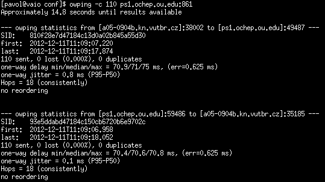

OWAMP
Nástroj implementujúci protokol OWAMP, ktorý bol navrhnutý na testovanie jednosmerného oneskorenia medzi dvoma stanicami. Hodnota jednosmerného oneskorenia mô¾e pomôc» pri lep¹ej identifikácii problému. Je nutné zdôrazni», ¾e táto utilita nie je schopná odmera» priepustnos». Namerané hodnoty boli v porovnaní s hodnotami RTT, získaných pomocou utility Ping v¾dy väè¹ie. Hodnota jednosmerného oneskorenia musí by» ni¾¹ia ako RTT. Aby sme mohli rozhodnú», ktoré výsledky boli správne vy¾aduje podrobnej¹ie testovanie.Zdroje a základne spustenie
Domovská stránkaManuál
Link na stiahnutie - Pou¾itá verzia 3.3
Architektúra klient-server, owping, owampd.
Príklad základného spustenia klienta a servera:
$ owping -c <adresa>:<port>
$ owampd -S <adresa>:<port>
Vy¾aduje synchronizovaný èas pomocou NTP - Network Time Protocol.
Úpravy v owampd.conf, aby démon poslúchal na danej IP adrese a porte, ktorý nevy¾aduje práva super u¾ívateµa.
srcdone localhost:861
srcnode adresa_rozhrania:8610
Uká¾ka testov
Test jednosmerného oneskorenia, poèet poslaných paketov 110.
$ owping -c 110 adresa

Nekorektné správanie
Ak sa klient nachádzal za prekladom adries nebolo mo¾né nadviaza» spojenie s démonom. Z toho vyplýva, ¾e aplikáciu nebude môc» pou¾íva» väè¹ina be¾ných u¾ívateµov, kvôli roz¹írenému pou¾itiu prekladu adries.
Vybrané prepínaèe
| Parameter | Popis |
|---|---|
| Prepínaèe pre owping | |
-h |
výpis nápovedy |
-c <èíslo> |
poèet testovacích paketov, (implicitne 100) |
-f |
prevedie jednosmerný test smerom od vzdialeného hostiteµa |
-t |
prevedie jednosmerný test smerom k vzdialenému hostiteµovi |
-s <èíslo> |
veµkos» paketu |
-4 |
pou¾ije IPv4 protokol, (implicitne preferuje IPv6) |
-6 |
pou¾ije IPv6 protokol |
| Prepínaèe pre owampd | |
-Z |
spustenie na popredí |
-c <adresa> |
cesta k prieèinku obsahujúcemu konfiguraèné súbory (owampd.conf, owampd.limits, ak sa nezadá berie aktuálny pracovný adresár) |
-S <adresa>:port |
urèí adresu a port na ktorom bude prijíma» spojenia |